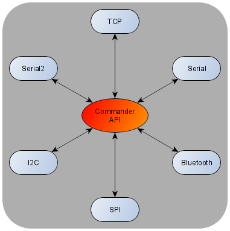
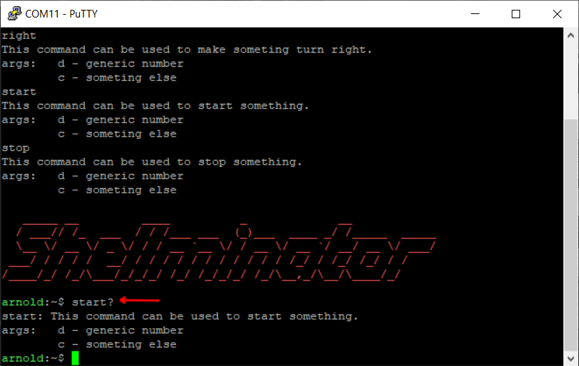

|
Commander-API
V2.0.0
Commander-API is a C++ API, that parses character based commands.
|
|
Commander-API
V2.0.0
Commander-API is a C++ API, that parses character based commands.
|
1.
The first thing you have to do is to add the library files to your project. It is discussed in the Arduino installation page how to do.
2.
The next thing you have to do is to include the library at the beginning of your program.
Code:
3.
Now, you have to create at leas 3 commands, and add them to the interpreter. To do that, first you have to open the interpreter.cpp file. Locate the next comment:
By default in the code, there are 4 commands created as an example, below this comment.
You can modify these of course. How you can create a new one is shown in the next step.
4.
If you want to create a new command, firstly you have to create its data. To do that you have to use create_command_data macro. The syntax is:
Example:
Note that the name of the command should not have " characters before and after like a regular string! The name also can't start with a number, and you can't use any special characters in it like: ?!,:-...etc..
5.
In step 3, and 4 you only created the data for the commands. In this step you have to add these data to the interpreter. To do that you have to find the following text int the implementation of init_interpreter function:
By default in the code, there are 4 commands added as an example, below this comment.
You can modify these of course. How you can create a new one is shown in the next step.
6.
To add the created data to the interpreter you have to use add_command macro. The syntax is:
Example:
Not that the name of the command has to match exactly with the name in step 3 and 4!
7.
Now you have to create the function that will be executed when the command arrives to the interpreter. The name of this function has to be exactly the same as the function name( 2nd argument ) in step 5, and 6.
Example:
The example above is quite complex, but it shows all of the futures that a command function has. You don't have to use all of it if you doesn't need that specific function. The only restriction is that the function type has to be the same.
You can write these functions driectly in interpreter.cpp file, or you can create a header and an implementation file for your command functions and include that in interpreter.hpp.
Example:
I know that it is not pretty, but in practice you just copy and rename it.
8.
The next thing is to count how many commands you have. This number has to be exact! You have to open interpreter.hpp file, then search for the NUM_OF_API_FUNCS definition. Give this macro the correct number of commands.
9.
The library has an option called ARDUINO_PLATFORM in interpreter.hpp. If you use Arduino IDE you have to uncomment this define.
10.
Now the basic configuration of the library is finished, so you just have to use it in your code. The interpreter has to be initialized. To initialise the interpreter the safest practise is, to initialise it as soon as possible. The reason for this is because the library uses some recursive functions to build a binary tree from the commands. It needs a relatively high amount of stack compared a simple initialisation function. After the initialisation this stack memory will be freed up. In Arduino environment basically you have to init Serial first, then, init the interpreter in the beginning of the setup function.
Code:
10.
Now you just have to use the execute function every time you want to execute a command. The 3 examples in the Arduino folder in the repository shows 3 detailed example to use and understand this library.
Congratulations, you have made your first project with Commander API :)

Imagine a system that has a various number of channels to communicate with. For example a Linux system, which has its shell redirected to SSH, Serial, GUI... If a command arrives in one of the supported channels, you want to generate the response to that channel. For example if a command arrives from Serial, you want to generate the answer and the messages from the command to Serial as well, not to any other channels. This is why response function is used. The Commander API handles everything you just have to create a valid response function to it. The advanced demo shows how to add a response function correctly. If you don't use a response function, please use NULL as argument. In this case the error messages will be redirected to INTERPRETER_PRINTF definition.

To print the description you just have to add a question mark to the end of the command.
Commander API designed to work mainly on embedded devices. In these devices usually you work from RAM. If you work from RAM you have an option to modify the contant of the command that has given to the execute function. There are two cases when you MUST have to use a buffer:
1. When you want to use the execute function with constant data. In this case the Commander API will try to overwrite this data, while executing the command. Why is it work like this is explained in the source file. In this case it will cause Hard Fault, because the software will try to modify the content of the FLASH( or program ) memory. This is restricted.
2. When you don't want to modify the data. In my opinion it is very rare. In most cases you just collect the command string until a terminator character and pass it to the interpreter. If you need the command string after the execute function use a buffer.
How to setup buffered mode:
1.
Open interpreter.hpp and find INTERPRETER_BUFFER_SIZE definition.
2.
If it is commented, uncomment it. You have to decide how large buffer you need. If it is too large than you will waste RAM. If it is too short, than you can't interpret large commands correctly.
If you does not need a buffer, than you MUST uncomment INTERPRETER_BUFFER_SIZE!
The arduino_printf function is implemented by compatibility reasons. Commander API requires a printf like function as a communication channel. This function acts like a printf function, but it is redirected to serial. If you need more channels like TCP or bluetooth you have to implement a printf like functions for those channels as well.